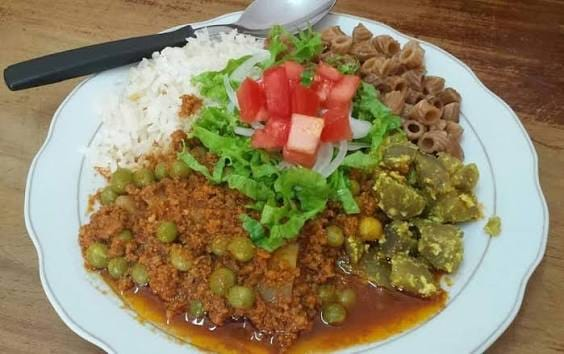
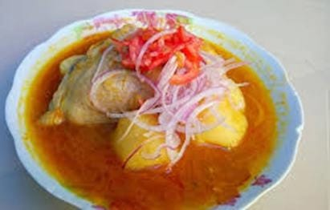
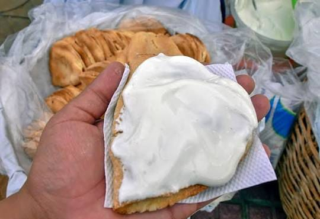
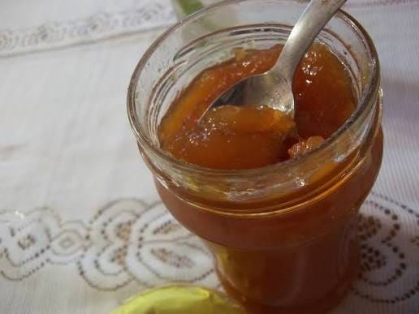
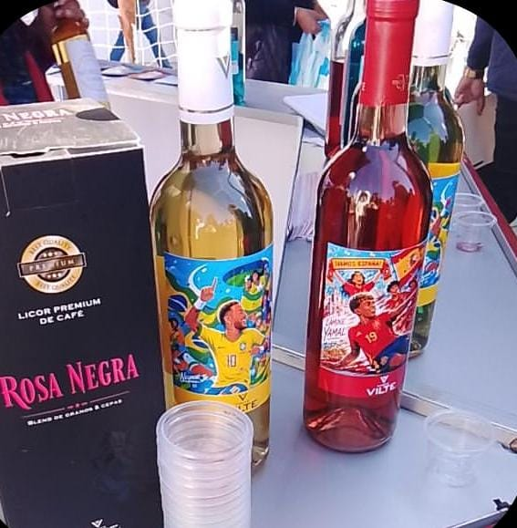
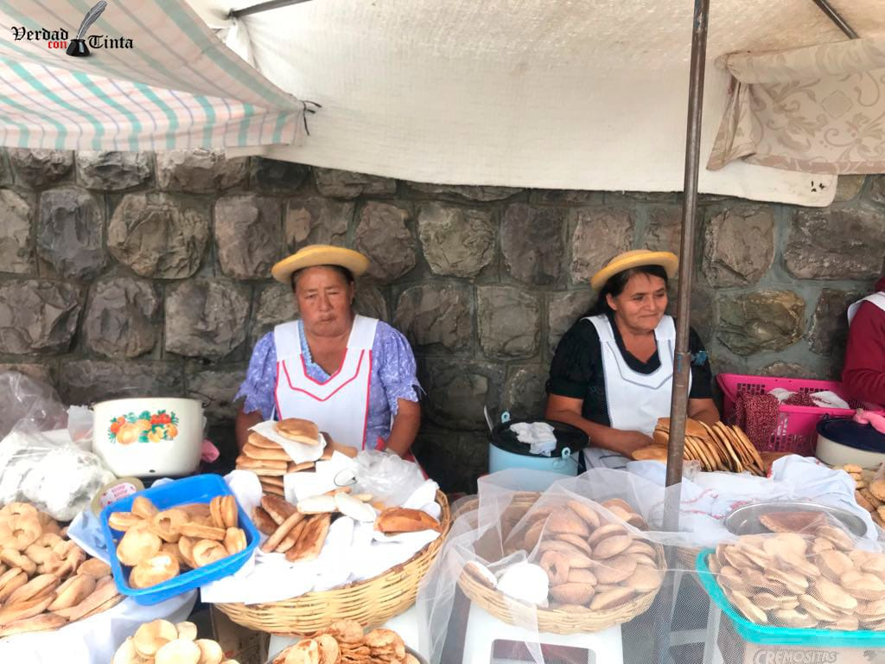

Entorno y Servicios
Sabores y servicios cerca del templo
Lo típico de Tarija para completar tu visita a San Roque.
| Plato / bebida | Descripción | Imagen |
|---|---|---|
| Saice | Carne picada y condimentada, servida con arroz, papa y fideo — el plato más representativo de la región. |  |
| Chancao de gallina | Guiso de gallina con ají amarillo, tradicionalmente preparado para ocasiones festivas. |  |
| Empanadas blanqueadas | Empanadas horneadas con un característico acabado blanco de azúcar impalpable. |  |
| Dulces de camote y durazno | Postres artesanales elaborados con productos de los valles tarijeños. |  |
| Vino y singani | Producidos en la Ruta del Vino del Valle de la Concepción, cercana a la ciudad de Tarija. |  |
| Masas Tradicionales | Son preparaciones tradicionales caracteristicas de la fiesta de San Roque. |  |
| Tipo de servicio | Qué encontrarás |
|---|---|
| Restaurantes | Locales de comida tarijeña tradicional a pocas cuadras del casco histórico. |
| Hospedaje | Hostales y hoteles de distintas categorías en el centro de la ciudad. |
| Artesanías | Puestos y tiendas de tejidos, cerámica y recuerdos típicos de la región. |
| Transporte | Paradas de trufi, micro y taxis disponibles en las calles aledañas al templo. |
Recomendación
Combina tu visita
Después de visitar la Iglesia de San Roque, aprovecha para probar el saice en algún restaurante cercano y llevarte un recuerdo artesanal del centro de Tarija.